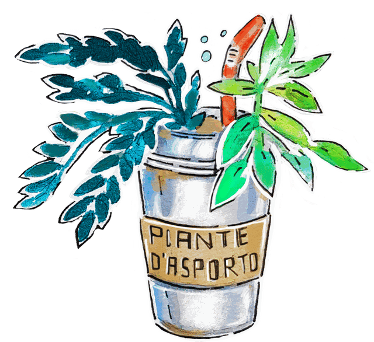

Piante d'Asporto
L'evento di scambio per chi ha molte piante. Forse troppe. Sicuramente doppie.
Se hai tante piante e non ne vuoi di più, ma ne vuoi comunque altre, questo è l'evento che fa al caso tuo.
#Piantedasporto è l'evento per chi ha tante piante (forse troppe, sicuramente doppie) che permette di scambiarle con altre persone, scoprire cose nuove sul mondo vegetale e far fiorire la propria passione.
Prossimi appuntamenti
-
#Piantedasporto San Donato
@Lo Sbando Piazza Paravia 9B, Torino
Cadono le foglie, ma non la voglia di stare insieme!
Domenica 22 novembre, appuntamento autunnale con Piante d'Asporto: un workshop per sporcarsi le mani, bella musica per rifarsi le orecchie e una tisana (o tre) per accompagnare la conversazione.
E ovviamente, tante piante da scambiare e persone con cui fare amicizia.
-
15:00 Workshop di rinvaso (offerta libera)
Sembra facile, ma non lo è: sapere come fare un corretto rinvaso delle piante è una delle cose che distingue un pollice verde da un pollice verso. Con un po' pazienza, in questa oretta vedremo insieme le principali problematiche, gli errori da evitare e sfateremo qualche falso mito.
-
17:00 scambio piante, tisane e DJ set botanico con La Stefy
Il fulcro di ogni evento di Piante d'Asporto: lo scambio! Porta le tue piante e talee, scambiale con altre persone. È un ottimo pretesto per fare conoscenza!
Mi raccomando, leggi il regolamento!
Per partecipare compila il form di iscrizione:
-
-
#Piantedasporto San Salvario
@Casa del Quartiere di San Salvario via Morgari 14, Torino
Scambio piante: porta una pianta, prendi una pianta!
-
Ore 16:00 raccolta piante
Porta le piante o le talee che desideri scambiare, e ricevi in cambio un talloncino.
-
Ore 17:30 scambio piante
Restituendo il talloncino potrai prendere una pianta o una talea in cambio. Voilà!
Mi raccomando, leggi il regolamento!
-
Nessuna data in calendario, per ora.
Intanto annaffia, rinvasa, fai talee. Per sapere quando e dove: scrivici.